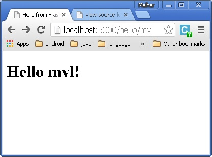
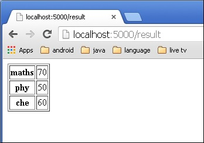

قبل شروع باید بابت ایجاد تأخیر تولید این قسمت نسبت به قمست۳ پوزش بخوام، درگیری و مشلغه کاری خیلی اجازه تولید این قسمت را نمی داد.
همچنین بقیه آموزها را می تونید از از اینجا مشاهده کنید.
یکی از امکانات Flask اتصال خروجی یک تابع به یک آدرس در قالب HTML می باشد. برای نمونه، در کد پیش رو، تابع hello() مقدار Hello World را به همراه تگ های Html قابل نمایش می کند.
from flask import Flask
app = Flask(__name__)
@app.route('/')
def index():
return '<html><body><h1>Hello World</h1></body></html>'
if __name__ == '__main__':
app.run(debug = True)
هر چند، تولید محتوای HTML با پایتون، به ویژه زمانی که نیازمند مقادیر متغییرها، و المان های موجود در زبان پایتون، از قبیل چرخه ها، یا شروط، مایه زحمت است.
اینجا، جایی است که می توان از قابلیت های موتور قالب Jinja2 بهره برد. به جای استفاده از کدهای HTML، می توان با استفاده از تابع render_template() و یک فایل HTML جداگانه این موضوع را انجام داد.
from flask import Flask
app = Flask(__name__)
@app.route('/')
def index():
return render_template(‘hello.html’)
if __name__ == '__main__':
app.run(debug = True)
در این حالت،Flask سعی دارد تا فایل HTML را در مسیر فایل قالب، در مسیری که اسکریپت جاری اجرا شده است را پیدا و اجرا نماید.
Application folder
----Hello.py
----templates
----hello.html
اصطلاح سیستم قالب وب اشاره دارد به طراحی و تولید یک اسکریپت HTML که در آن مقادیر متغییرها می توانند به صورت پویا جانمایی شوند. یک سیستم قالب وب، شامل یک موتور تولید قالب، برخی منابع داده و یک پردازشگر قالب می باشد.
برنامه Flask از Jinja2 به عنوان یک موتور قالب استفاده می کند. یک قالب وب شامل مکان هایی نگهداری برای متغییرها و عبارات در لابلای تگ های HTML، جایی که مقادیر آنها زمانی که صفحه قالب نمایش داده می شود، جایگزاری می شوند.
برای نمونه:
<!doctype html>
<html>
<body>
<h1>Hello {{ name }}!</h1>
</body>
</html>
سپس، اسکریپت زیر را در پایتون اجرا کنید:
from flask import Flask, render_template
app = Flask(__name__)
@app.route('/hello/<user>')
def hello_name(user):
return render_template('hello.html', name = user)
if __name__ == '__main__':
app.run(debug = True)
زمانی که سرور شروع به اجرا کرد، مرورگر را اجرا و آدرس
http://localhost:5000/hello/mvl
را پیمایش کنید.
قسمت متغییر {{ name }} در آدرس در کد جایگزایری خواهد شد.

موتور قالب Jinja2 از جداکننده های زیر برای تمایز از HTML استفاده می کند:
- {% ... %} برای دستورات
- {{ ... }} برای عبارات تا در قالب چاپ شوند
- {# ... #} برای کامنت ها و در خروجی تأثیر ندارند
- # ... ## برای دستورات یک خطی
در مثال پیش رو، انحوه استفاده از عبارات شرطی در قالب نمایش داده شده است. آدرسی که به تابع hello() اشاره دارد مقادیر عددی قبول می کند. در فایل hello.html مقدار عددی متغیر mark دریافت شده، مقایسه شده (بیشتر یا کمتر از ۵۰) و HTML متناسب نمایش داده می شود.
اسکریپت مربوطه به پایتون به صورت زیر است:
from flask import Flask, render_template
app = Flask(__name__)
@app.route('/hello/<int:score>')
def hello_name(score):
return render_template('hello.html', marks = score)
if __name__ == '__main__':
app.run(debug = True)
کد مربوط به HTML به صورت زیر است:
<!doctype html>
<html>
<body>
{% if marks>50 %}
<h1> Your result is pass!</h1>
{% else %}
<h1>Your result is fail</h1>
{% endif %}
</body>
</html>
همچنین می توان از چرخه های پایتون در قالب استفاده نمود. در اسکریپت پیش رو، تابع result() زمانی که آدرس http://localhost:5000/result فراخوانی شود، یک شئ dictionary به قالب result.html ارسال کرده
در فایل result.html یک حلقه for جهت نمایش مقادیر در قالب HTML به صورت کلید مقدار استفاده شده است.
کد پایتون:
from flask import Flask, render_template
app = Flask(__name__)
@app.route('/result')
def result():
dict = {'phy':50,'che':60,'maths':70}
return render_template('result.html', result = dict)
if __name__ == '__main__':
app.run(debug = True)
و کد HTML
<!doctype html>
<html>
<body>
<table border = 1>
{% for key, value in result.items() %}
<tr>
<th> {{ key }} </th>
<td> {{ value }} </td>
</tr>
{% endfor %}
</table>
</body>
</html>
سپس برنامه را اجرا و آدرس http://localhost:5000/result را در مرورگر برای مشاهده نتیجه باز کنید.

پس در نتیجه، تا حدی با نحوه استفاده از موتور قالب Jinja2 آشنا شدیم. البته این موتور قالب ویژگی های خیلی بیشترو کاربردی دارد.